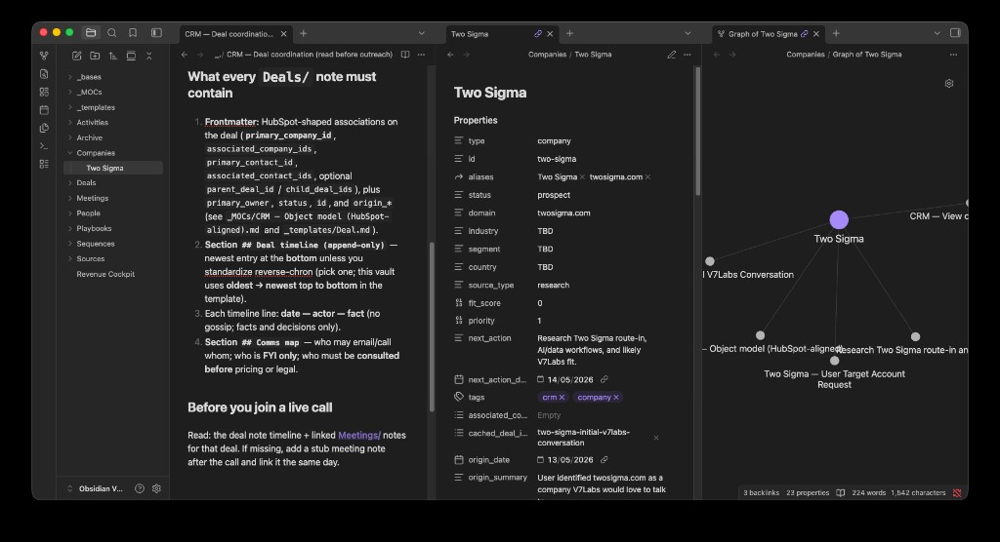
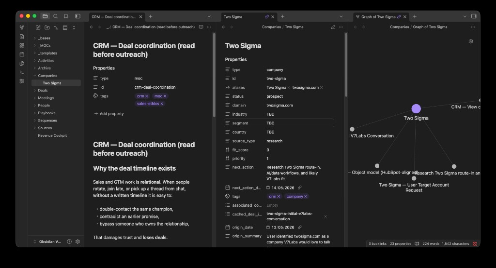
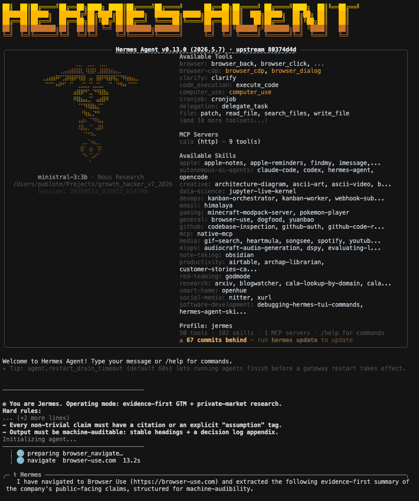
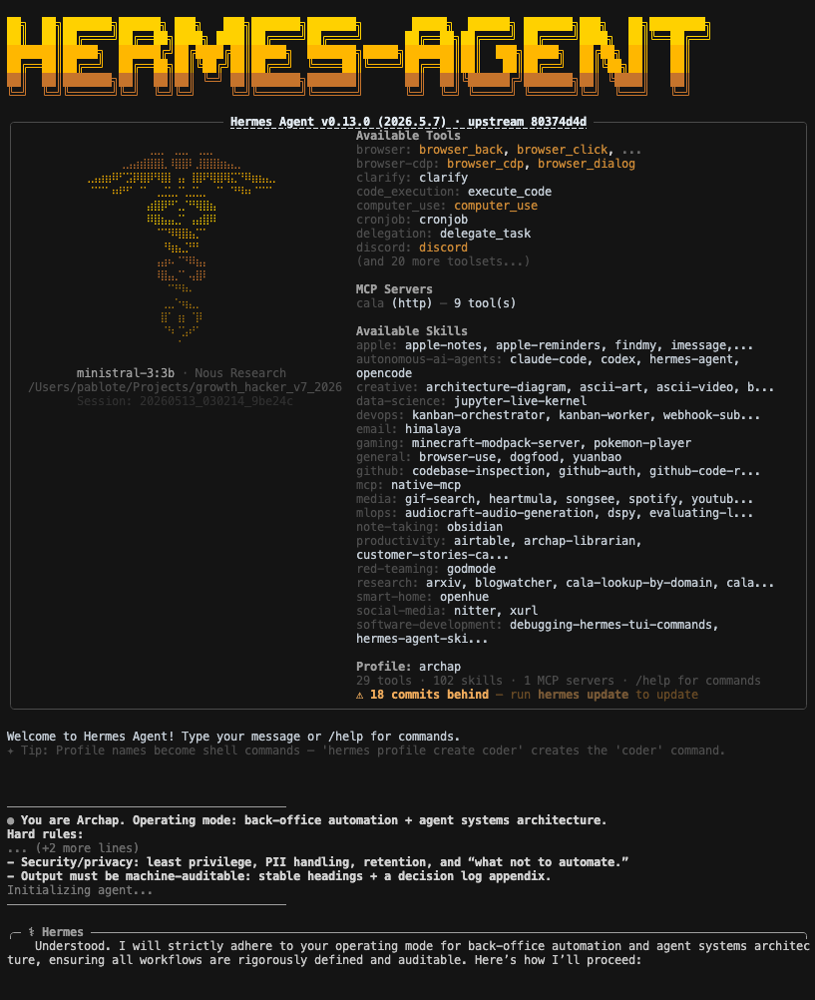
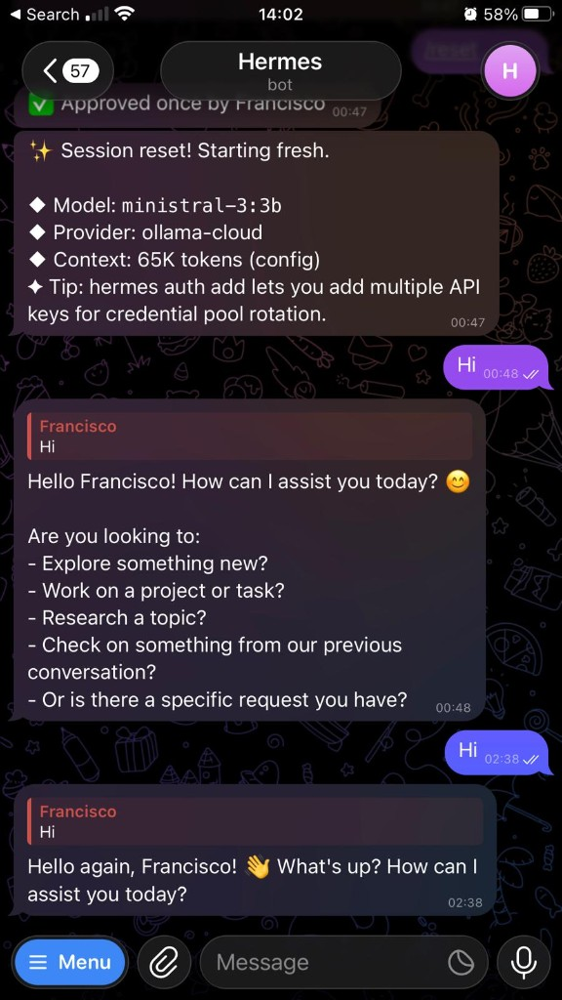
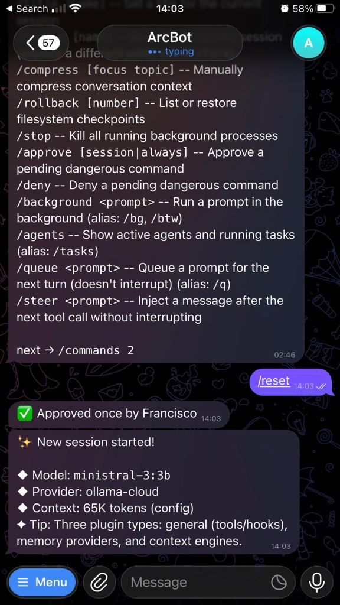

Accounts sit inside networks.
Investors, alumni, events, customers, competitors, and founders create usable paths.
V7Labs Review Deck
Proposal: turn private-market signals into evidence-backed routes V7 can review, trust, and reuse.
01 / Timing-graph lens
We propose treating GTM as a timing graph: relations, decaying intent, and compounding memory—not only flat targets.
Investors, alumni, events, customers, competitors, and founders create usable paths.
Fundraises, hiring, leadership moves, and events create narrow windows.
Company, person, route, source, and outcome notes become reusable CRM context.
02 / Engine Inputs
Source coverage feeds repeatable calls, browser verification, and CRM writeback.
Private-market signals, movers, investors, company context.
Timing and route evidence.
Entity resolution, investor graph, outreach paths by domain.
False-match reduction.
Events, organizers, attendee pages, and other pingable public surfaces.
Reason-to-reach-out source trail.
Public signal surface, competitor-client farming, social intent.
Account timing and opener evidence.
People and account discovery, filters, relationship paths, job changes.
Warm routes and recent-joiner triggers.
Research, CRM writeback, source trail, next action.
Reusable memory.
02A / Source-To-CRM Flow
03 / Agent Layer
04 / CRM Memory
V1 is live: company, people, deals, meetings, sources, and next actions are linked as markdown records.
04A / Obsidian Proof
Linked notes, properties, backlinks, and graph edges make each account reviewable before outreach.

05 / Account Route Proposal
Fresh capital creates workflow scale pressure.
Cala relationship graph + Specter private-market signal, source-confirmed.
Shared backers and board edges create a credible path.
Named relationship edge, not persona guesswork.
New operator has a first-90-days change window.
Sales Navigator or LinkedIn job-change source + workflow relevance.
Public X activity exposes competitor clients, pain, and timing.
Nitter / X capture + account-fit review before outreach.
Organizer, attendee, sponsor, or speaker context creates a reason to talk.
Luma/event-page browser source trail + account fit.
05A / Route Depth
06 / GTM Flywheel
Seed accounts, private-market thesis, and source inputs define the first search surface.
Hermes turns evidence into resolved entities, source trails, Obsidian CRM memory, routes, and reusable skills.
Investor paths, recent joiners/leavers, fundraising, event context, competitor/client farming, precise opener, next action.
LinkedIn / X publishing, connection requests, warming, replies, social proof, event loops, CRM feedback.
07 / Example Account Route
A route template for live review: signal, relationship path, source trail, and next action.
Private-market / AI data workflow target enters the research queue.
Cala checks identity and graph context; Specter, Nitter, and Sales Navigator add company, people, and social signals when available.
Research Hermes proposes a route-in: investor, alumni, event, recent joiner, or workflow pain.
Human reviews the packet, edits the opener, and logs the outcome.
07 / Example Account Route
The proof is the Obsidian record and graph structure, not the account being "hot."

08 / Hermes Route Trace
Every proposed action carries its source trail, CRM writeback, and next-step rationale.
Find a warm route into a private equity ops team.
Cala graph, Specter enrichment, LinkedIn/Sales Navigator review, Nitter / X capture, Luma/event-page browser verification, Obsidian writeback.
Source-backed opener, CRM record, and reusable route rule.
Inspect the replay trace before any outreach reaches a rep.
08A / Replay Trace
09 / Proof Packet Review
Obsidian, Hermes, and the data adapters are already producing reviewable local evidence.
20 markdown CRM notes, 50 properties, linked Two Sigma record.
↓ Obsidian proof
Docker-local research and CRM/ops Hermes, with Telegram ping and command surfaces.
→ Hermes proof
Specter adapter, Cala graph path, LinkedIn/Sales Navigator inputs, Nitter / X and Luma Browser Use paths, Docker image.
→ Tools proof
09A / Obsidian CLI Evidence
# HubSpot-shaped association fields cached_deal_ids: - two-sigma-initial-v7labs-conversation primary_company_id: "two-sigma" associated_company_ids: [] primary_contact_id: ""
$ obsidian eval code="app.vault.getFiles().length" → 26 files
$ obsidian files ext=md total → 20 markdown CRM notes
$ obsidian properties total → 50 properties
$ obsidian links file="Two Sigma" total → 4 outgoing links
$ obsidian backlinks file="Two Sigma" counts → 3 records point back
09B / Hermes Evidence


Source: live Hermes terminal screenshots from the working V1.


Source: Telegram bot screenshots; audio is the declared input surface.
09C / Data And Tool Evidence
Browser Use session capture plus HTTP replay for company, people, investor, and signal endpoints.
Domain-first disambiguation and multi-hop outreach paths reduce false matches before CRM mutation.
Browser Use captures and verifies pingable surfaces: Luma/event pages, LinkedIn, Sales Navigator, Nitter / X, and competitor/client pages where APIs stop.
Social intent, competitor-client farming, account filters, relationship paths, job changes, and event context feed route ranking without claiming live automation.
The browser-capable Hermes image runs locally today, mounts the repo and Obsidian vault without baking secrets, and is the unit to move to or add on Oracle Cloud.
10 / Proposal Next Step
| What's live | Evidence |
|---|---|
| Static proposal deck | public/index.html |
| Deck validation script | scripts/validate_static_deck.mjs |
| Specter lookup tooling | scripts/specter_lookup.py |
| Deck screenshots (Obsidian CRM, Hermes) | public/assets/ |
| Hermes Docker browser agent | hermes/docker/browser-agent.Dockerfile |
| Cala adapter usage (Hermes) | cala/AGENTS.md |